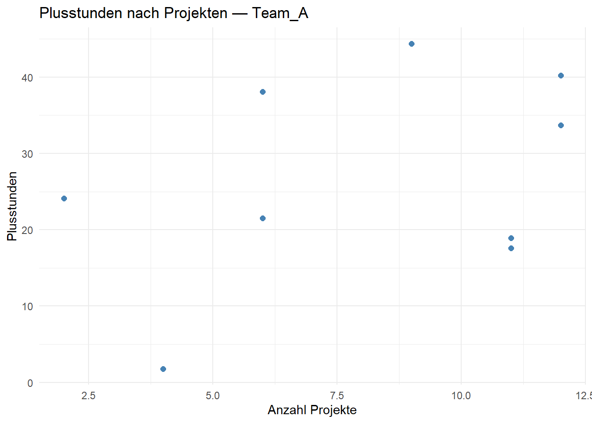
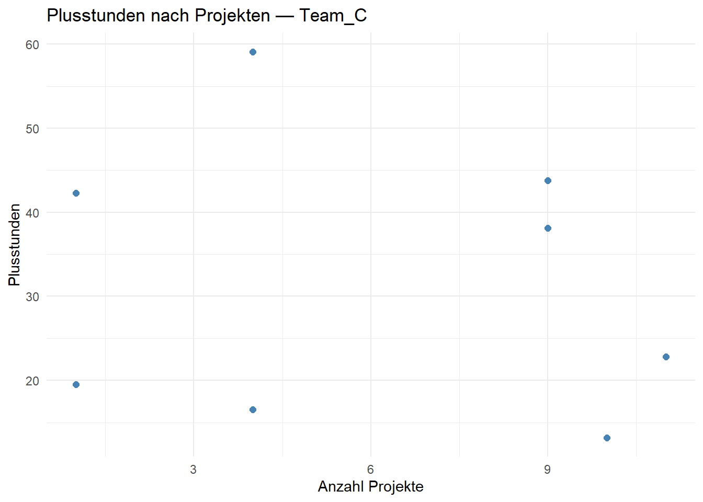

library(dplyr)
library(ggplot2)
tmax_wien <- c(Mai = 20.1, Juni = 24.1, Juli = 26.0, August = 25.7, September = 20.5)
mitarbeitende <- read.csv("data/raw/mitarbeitende.csv")Einheit 4: Bedingungen, Schleifen & Funktionen
Bisher lief jeder Code einfach von oben nach unten. In dieser Einheit lernst du, den Ablauf zu steuern und eigene Werkzeuge zu bauen:
- Bedingungen — Code nur ausführen, wenn etwas zutrifft:
if,else,ifelse(),case_when() - Schleifen — Code wiederholen:
for,while - Eigene Funktionen — wiederkehrende Schritte einmal schreiben, oft verwenden
- Funktionen auf viele Elemente anwenden —
sapply()undlapply() - Alles zusammen — eine Grafik pro Team
Wir verwenden wieder die Temperaturen aus Einheit 1 und die Mitarbeitenden-Daten aus Einheit 3:
Teil 1: Bedingungen
if und else
if führt den Code in den geschweiften Klammern { } nur aus, wenn die Bedingung in den runden Klammern TRUE ist. else gibt an, was sonst passieren soll:
temperatur <- 26
if (temperatur > 25) {
print("Sommertag")
} else {
print("kein Sommertag")
}[1] "Sommertag"Mit else if lassen sich mehrere Fälle nacheinander prüfen — der erste zutreffende gewinnt:
temperatur <- 18
if (temperatur >= 30) {
print("heiß")
} else if (temperatur >= 20) {
print("warm")
} else {
print("kühl")
}[1] "kühl"Achtung: if prüft genau einen Wert
if braucht ein einzelnes TRUE oder FALSE. Bei einem Vektor mit mehreren Werten gibt es einen Fehler:
if (tmax_wien > 25) {
print("Sommertag")
}Error in `if (tmax_wien > 25) ...`:
! Bedingung hat Länge > 1Soll eine Bedingung für jedes Element eines Vektors geprüft werden, nimmt man ifelse(bedingung, wert_wenn_wahr, wert_wenn_falsch):
ifelse(tmax_wien > 25, "Sommertag", "kein Sommertag") Mai Juni Juli August
"kein Sommertag" "kein Sommertag" "Sommertag" "Sommertag"
September
"kein Sommertag" Mehrere Fälle in einem Data Frame: case_when()
Für neue Spalten mit mehr als zwei Kategorien ist case_when() aus dplyr übersichtlicher als verschachtelte ifelse(). Jede Zeile hat die Form bedingung ~ ergebnis; die erste zutreffende Bedingung gewinnt, TRUE ~ fängt alles Übrige auf:
mitarbeitende <- mitarbeitende %>%
mutate(belastung = case_when(
is.na(plusstunden) ~ NA, # fehlende Werte zuerst abfangen
plusstunden > 40 ~ "hoch",
plusstunden > 20 ~ "mittel",
TRUE ~ "niedrig"
))
mitarbeitende %>% select(name, plusstunden, belastung) %>% head(8) name plusstunden belastung
1 Anna 16.5 niedrig
2 Bertram 44.4 hoch
3 Charlotte 1.8 niedrig
4 Dennis 33.7 mittel
5 Emily 13.2 niedrig
6 Farid 9.6 niedrig
7 Greta 57.4 hoch
8 Hannes 21.5 mittelOhne die erste Zeile würde Vera als "niedrig" eingestuft: Ihre Vergleiche ergeben NA, und dann greift TRUE ~.
Übung
- Schreibe ein
if/else, das für eine Variableprojekte_anzahlausgibt, ob jemand"viele Projekte"(mindestens 10) oder"wenige Projekte"hat. - Füge
mitarbeitendemitmutate()undifelse()eine Spalteregion_bekannthinzu, dieTRUEist, wenn das Team inc("Team_A", "Team_B", "Team_C", "Team_D")vorkommt (Tipp:%in%— braucht man hier überhauptifelse()?).
# dein CodeTeil 2: Schleifen
for-Schleifen
Eine for-Schleife führt denselben Code für jedes Element eines Vektors aus. Die Schleifenvariable (hier monat) nimmt nacheinander jeden Wert an:
for (monat in names(tmax_wien)) {
print(paste(monat, ":", tmax_wien[monat], "°C"))
}[1] "Mai : 20.1 °C"
[1] "Juni : 24.1 °C"
[1] "Juli : 26 °C"
[1] "August : 25.7 °C"
[1] "September : 20.5 °C"Innerhalb einer Schleife wird nichts automatisch angezeigt — deshalb braucht es print().
Ergebnisse in einer Schleife sammeln
Will man die Ergebnisse behalten, legt man vorher einen leeren Vektor passender Länge an und füllt ihn Position für Position. seq_along(x) liefert die Positionen 1, 2, …, length(x):
fahrenheit <- numeric(length(tmax_wien)) # Vektor aus Nullen
for (i in seq_along(tmax_wien)) {
fahrenheit[i] <- tmax_wien[i] * 9 / 5 + 32
}
fahrenheit[1] 68.18 75.38 78.80 78.26 68.90Wann braucht man eine Schleife — und wann nicht?
Das Beispiel oben geht in R auch ohne Schleife, weil Rechnungen auf Vektoren elementweise laufen (Einheit 1) — kürzer und schneller:
tmax_wien * 9 / 5 + 32 Mai Juni Juli August September
68.18 75.38 78.80 78.26 68.90 Faustregel: Erst prüfen, ob es eine vektorisierte Lösung gibt (Rechnen mit Vektoren, ifelse(), mutate(), group_by()). Schleifen braucht man vor allem dann, wenn pro Durchlauf etwas passiert: eine Datei einlesen, eine Grafik speichern, eine Meldung ausgeben (siehe Teil 5).
while-Schleifen
while wiederholt, solange eine Bedingung gilt. Die Bedingung muss sich in der Schleife irgendwann ändern — sonst läuft sie endlos (abbrechen mit dem roten Stopp-Knopf oder Esc):
kontostand <- 1000
jahre <- 0
while (kontostand < 1500) {
kontostand <- kontostand * 1.05 # 5 % Zinsen pro Jahr
jahre <- jahre + 1
}
jahre[1] 9round(kontostand, 2)[1] 1551.33Zwei Befehle steuern Schleifen zusätzlich: next springt zum nächsten Durchlauf, break beendet die Schleife sofort.
Übung
- Gib mit einer
for-Schleife für jedes Team inunique(mitarbeitende$team)die Anzahl Personen aus, z. B."Team_A: 9 Personen". - Wie viele Jahre dauert es, bis sich 1000 € bei 3 % Zinsen verdoppeln? Löse es mit
while.
# dein CodeTeil 3: Eigene Funktionen
Eine Funktion schreiben
Wenn du denselben Code mehrmals kopierst, ist es Zeit für eine eigene Funktion. Aufbau:
name <- function(argument1, argument2) {
# was die Funktion tut
ergebnis
}Der letzte Ausdruck im Funktionskörper ist das Ergebnis, das zurückgegeben wird:
celsius_zu_fahrenheit <- function(celsius) {
celsius * 9 / 5 + 32
}
celsius_zu_fahrenheit(20)[1] 68celsius_zu_fahrenheit(tmax_wien) # funktioniert auch mit Vektoren Mai Juni Juli August September
68.18 75.38 78.80 78.26 68.90 Standardwerte für Argumente
Wie bei eingebauten Funktionen können Argumente einen Standardwert haben, der gilt, wenn man sie weglässt:
runde_prozent <- function(anteil, stellen = 1) {
round(anteil * 100, stellen)
}
runde_prozent(0.12345) # stellen = 1[1] 12.3runde_prozent(0.12345, stellen = 3)[1] 12.345Mehrere Ergebnisse zurückgeben
Eine Funktion gibt genau ein Objekt zurück. Für mehrere Werte packt man sie in einen benannten Vektor (oder eine Liste):
kennzahlen <- function(x) {
c(n = sum(!is.na(x)),
mittelwert = round(mean(x, na.rm = TRUE), 1),
minimum = min(x, na.rm = TRUE),
maximum = max(x, na.rm = TRUE))
}
kennzahlen(mitarbeitende$plusstunden) n mittelwert minimum maximum
21.0 29.9 1.8 59.1 Eingaben prüfen: stop()
Mit if und stop() bricht eine Funktion mit einer verständlichen Fehlermeldung ab, wenn die Eingabe nicht passt — viel hilfreicher als ein kryptischer Fehler weiter hinten:
kennzahlen <- function(x) {
if (!is.numeric(x)) {
stop("x muss ein Zahlenvektor sein.")
}
c(n = sum(!is.na(x)),
mittelwert = round(mean(x, na.rm = TRUE), 1),
minimum = min(x, na.rm = TRUE),
maximum = max(x, na.rm = TRUE))
}
kennzahlen(mitarbeitende$name)Error in `kennzahlen()`:
! x muss ein Zahlenvektor sein.Variablen in Funktionen bleiben lokal
Was innerhalb einer Funktion erzeugt wird, existiert nur dort — es taucht nicht im Environment auf und überschreibt keine gleichnamigen Variablen außerhalb:
verdoppeln <- function(x) {
zwischenergebnis <- x * 2
zwischenergebnis
}
verdoppeln(5)[1] 10zwischenergebnis # Fehler: existiert außerhalb der Funktion nichtError:
! Objekt 'zwischenergebnis' nicht gefundenEine Funktion sollte deshalb alles, was sie braucht, über ihre Argumente bekommen.
Übung
- Schreibe eine Funktion
bmi(gewicht_kg, groesse_m), die den BMI auf eine Nachkommastelle gerundet zurückgibt. - Schreibe eine Funktion
spanne(x), die die Differenz zwischen größtem und kleinstem Wert zurückgibt und fehlende Werte ignoriert. Teste sie mitmitarbeitende$plusstunden.
# dein CodeTeil 4: Funktionen anwenden mit sapply()
Die Idee
Sehr oft will man dieselbe Funktion auf mehrere Dinge anwenden: den Mittelwert jeder Spalte, die Länge jedes Textes, eine Kennzahl für jedes Team. Mit einer for-Schleife sieht das so aus:
spalten <- mtcars[, c("mpg", "hp", "wt")]
mittelwerte <- numeric(ncol(spalten))
for (i in seq_along(spalten)) {
mittelwerte[i] <- mean(spalten[[i]])
}
names(mittelwerte) <- names(spalten)
mittelwerte mpg hp wt
20.09062 146.68750 3.21725 Das sind sechs Zeilen für eine einfache Idee: „Berechne mean für jede Spalte und sammle die Ergebnisse.” Genau diese Idee erledigt sapply() in einer Zeile — inklusive Namen:
sapply(spalten, mean) mpg hp wt
20.09062 146.68750 3.21725 Der Aufbau: sapply(X, FUN, …)
| Argument | Bedeutung |
|---|---|
X |
die Elemente, über die gegangen wird: ein Vektor, eine Liste oder ein Data Frame |
FUN |
die Funktion, die auf jedes Element angewendet wird |
... |
weitere Argumente, die an FUN weitergegeben werden (optional) |
Intern passiert dasselbe wie in der Schleife oben:
sapply()nimmt das erste Element vonXund ruftFUN(element)auf,- dann das zweite Element, das dritte … bis zum letzten,
- und fasst alle Ergebnisse zu einem möglichst einfachen Objekt zusammen (das s in
sapplysteht für simplify, „vereinfachen”).
Drei Dinge, auf die man achten muss:
- Bei einem Data Frame ist jedes Element eine Spalte (ein Data Frame ist eine Liste von Spalten, siehe Einheit 2).
sapply(df, mean)rechnet also spaltenweise. - Die Funktion wird ohne Klammern übergeben:
sapply(spalten, mean), nichtsapply(spalten, mean()). Man übergibt die Funktion selbst — aufrufen tut siesapply(). - Das Ergebnis behält die Namen der Elemente, deshalb steht oben
mpg,hp,wt.
Zusätzliche Argumente weitergeben
Bei den Mitarbeitenden-Daten gibt es einen fehlenden Wert — mean() liefert dann NA:
sapply(mitarbeitende[, c("plusstunden", "projekte")], mean)plusstunden projekte
NA 6.681818 Alles, was nach der Funktion steht, reicht sapply() an die Funktion weiter. So wird für jede Spalte mean(spalte, na.rm = TRUE) berechnet:
sapply(mitarbeitende[, c("plusstunden", "projekte")], mean, na.rm = TRUE)plusstunden projekte
29.928571 6.681818 Was kommt heraus?
Die Form des Ergebnisses hängt davon ab, was die Funktion pro Element zurückgibt:
FUN liefert pro Element … |
sapply() gibt zurück … |
|---|---|
| genau einen Wert | einen Vektor |
| mehrere Werte, immer gleich viele | eine Matrix — eine Spalte pro Element |
| unterschiedlich viele Werte | eine Liste |
sapply(spalten, mean) # 1 Wert pro Spalte → Vektor mpg hp wt
20.09062 146.68750 3.21725 sapply(spalten, range) # 2 Werte pro Spalte → Matrix (Minimum, Maximum) mpg hp wt
[1,] 10.4 52 1.513
[2,] 33.9 335 5.424sapply(c(2, 4), seq_len) # 2 bzw. 4 Werte → Liste[[1]]
[1] 1 2
[[2]]
[1] 1 2 3 4Mit unserer eigenen Funktion kennzahlen() aus Teil 3 entsteht eine übersichtliche Tabelle:
sapply(spalten, kennzahlen) mpg hp wt
n 32.0 32.0 32.000
mittelwert 20.1 146.7 3.200
minimum 10.4 52.0 1.513
maximum 33.9 335.0 5.424Anonyme Funktionen
Oft lohnt es sich nicht, für einen einzigen sapply()-Aufruf eine Funktion mit Namen anzulegen. Dann schreibt man die Funktion direkt in den Aufruf — eine anonyme Funktion (ohne Namen):
sapply(c(10, 20, 30), function(x) x^2)[1] 100 400 900So liest man das: „Für jedes Element — nenne es x — berechne x^2.” Der Name x ist frei gewählt und gilt nur innerhalb dieser kleinen Funktion.
Ein praktisches Beispiel: die durchschnittlichen Plusstunden für jedes Team. Die anonyme Funktion bekommt einen Teamnamen t und rechnet den Mittelwert nur für dieses Team:
alle_teams <- unique(mitarbeitende$team)
sapply(alle_teams, function(t) {
mean(mitarbeitende$plusstunden[mitarbeitende$team == t], na.rm = TRUE)
}) Team_C Team_A Team_B Team_E
31.9125 26.7000 35.2000 27.3000 Für Data Frames ist group_by() + summarise() (Einheit 3) meist die bequemere Lösung. sapply() ist dann praktisch, wenn man mit Vektoren, Listen oder Spalten arbeitet.
Kurzschreibweise: In neuerem Code sieht man statt function(x) oft \(x) — das ist seit R 4.1 dasselbe, nur kürzer: sapply(c(10, 20, 30), \(x) x^2).
sapply() oder lapply()?
lapply() (Einheit 2) funktioniert genauso, gibt aber immer eine Liste zurück — das l steht für list:
lapply(spalten, mean)$mpg
[1] 20.09062
$hp
[1] 146.6875
$wt
[1] 3.21725sapply() |
lapply() |
|
|---|---|---|
| Ergebnis | so einfach wie möglich: Vektor, Matrix oder Liste | immer eine Liste |
| gut für | Ergebnisse ansehen, Kennzahlen-Tabellen | Ergebnisse in Spalten zurückschreiben: df[cols] <- lapply(df[cols], as.numeric) |
Faustregel: Zum Anschauen sapply(), zum Weiterverarbeiten in einem Data Frame lapply().
Übung
- Welche Spalten von
mitarbeitendesind Zahlen? Wendeis.numericmitsapply()aufmitarbeitendean. Was für ein Objekt kommt heraus? - Berechne mit
sapply()das Maximum vonplusstundenundprojekte— fehlende Werte sollen ignoriert werden. - Berechne mit
sapply()und einer anonymen Funktion für jedes Land inunique(mitarbeitende$land)die Anzahl Personen. - Wende deine Funktion
spanne()aus Teil 3 mitsapply()auf die Spaltenmpg,hpundwtvonmtcarsan.
# dein CodeTeil 5: Alles zusammen — eine Grafik pro Team
Eine typische Aufgabe: Für jede Gruppe soll dieselbe Grafik entstehen. Wir schreiben eine Funktion für eine Grafik und rufen sie in einer Schleife für jedes Team auf:
grafik_team <- function(daten, team_name) {
daten %>%
filter(team == team_name, !is.na(plusstunden)) %>%
ggplot(aes(x = projekte, y = plusstunden)) +
geom_point(color = "steelblue", size = 2) +
labs(title = paste("Plusstunden nach Projekten —", team_name),
x = "Anzahl Projekte", y = "Plusstunden") +
theme_minimal()
}
for (t in c("Team_A", "Team_C")) {
print(grafik_team(mitarbeitende, t)) # in Schleifen: print() nötig
}

Zum Speichern ersetzt man print() durch ggsave() und baut den Dateinamen mit paste0():
for (t in unique(mitarbeitende$team)) {
ggsave(paste0("output/plusstunden_", t, ".png"),
plot = grafik_team(mitarbeitende, t), width = 6, height = 4)
}Ohne Funktion stünde der ganze Grafik-Code in der Schleife; mit Funktion lässt er sich einzeln testen und auch an anderer Stelle wiederverwenden.
Übung
Schreibe eine Funktion team_bericht(daten, team_name), die mit cat() einen Satz ausgibt wie "Team_A: 9 Personen, im Schnitt 26.7 Plusstunden". Rufe sie in einer Schleife für alle Teams auf.
# dein CodeZusammenfassung
- Bedingungen:
if (bedingung) { } else if { } else { }für einen Wert ·ifelse()für Vektoren ·case_when()inmutate(), fehlende Werte zuerst abfangen - Schleifen:
for (x in vektor) { }· Ergebnisse in vorher angelegtem Vektor sammeln ·seq_along()·whilemit Abbruchbedingung ·next/break· in Schleifenprint()· erst nach einer vektorisierten Lösung suchen - Funktionen:
name <- function(arg, arg2 = standard) { … }· letzter Ausdruck ist das Ergebnis · mehrere Werte als benannter Vektor oder Liste · Eingaben mitstop()prüfen · Variablen innerhalb bleiben lokal - Anwenden:
sapply(X, FUN, ...)wendetFUNauf jedes Element an (Data Frame: jede Spalte) · Funktion ohne Klammern übergeben · weitere Argumente wiena.rm = TRUEdahinter · Ergebnis Vektor, Matrix oder Liste ·lapply()gibt immer eine Liste · anonyme Funktionfunction(x) …